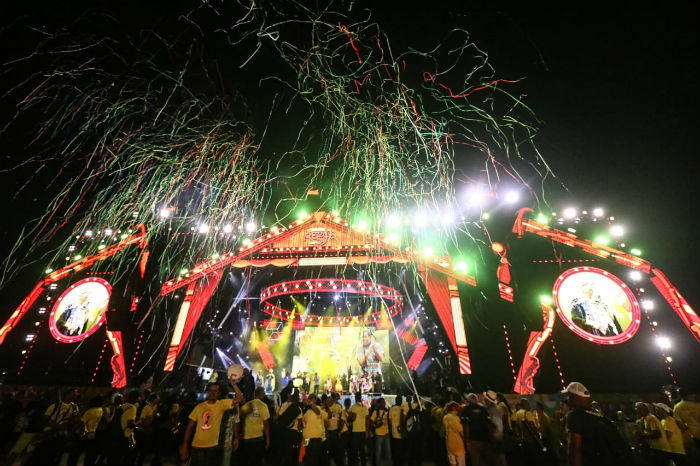
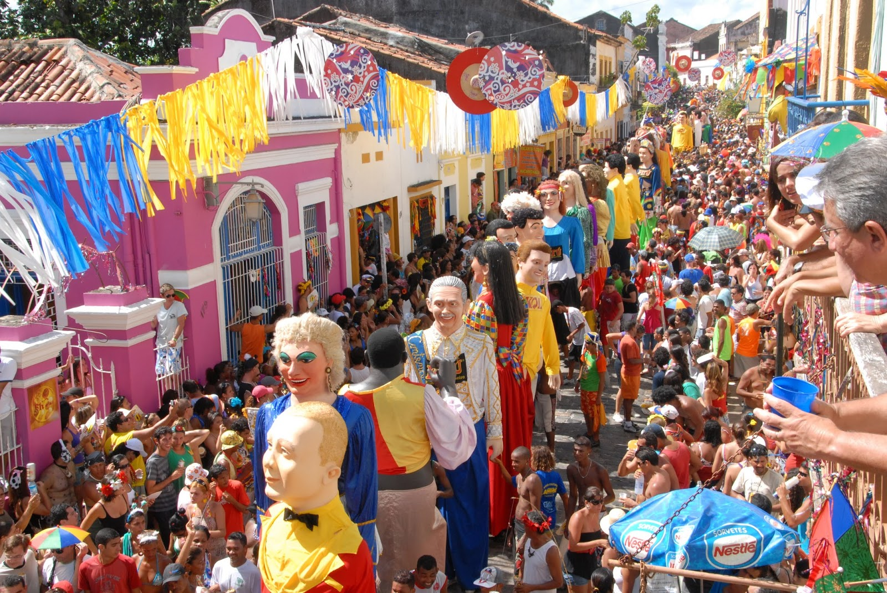

📅 Cronograma de Eventos
- 10 de Fevereiro - Abertura Oficial do Carnaval 🎊 
- 11 de Fevereiro - Desfile das Escolas de Samba 🥁
- 12 de Fevereiro - Blocos de Rua & Trio Elétrico 🎶
- 13 de Fevereiro - Festa à Fantasia 👑
- 14 de Fevereiro - Encerramento com Show Especial 🎆 
🗓️ 10 de Fevereiro – Abertura Oficial do Carnaval 🎊
🕒 18:00 – Abertura com DJ e show de fogosbrbr
🕒 19:30 – Apresentação da banda de marchinhas
🕒 21:00 – Show ao vivo com grupo de samba
🕒 23:00 – Festa com trio elétrico

🗓️ 11 de Fevereiro – Desfile das Escolas de Samba 🥁
🕒 16:00 – Concentração das escolas de samba
🕒 18:00 – Início do desfile
🕒 22:30 – Apresentação especial da escola campeã do último carnaval

🗓️ 12 de Fevereiro – Blocos de Rua & Trio Elétrico
🕒 14:00 – Bloco infantil com personagens e brincadeiras
🕒 16:30 – Bloco "Alegria Sem Fim" com axé e frevo
🕒 19:00 – Trio elétrico com convidados especiais
🕒 22:00 – Show de encerramento do dia

🗓️ 13 de Fevereiro – Festa à Fantasia 👑
🕒 19:00 – Abertura e desfile de fantasias
🕒 20:30 – Concurso da melhor fantasia
🕒 22:00 – Baile de máscaras com banda ao vivo
🕒 00:00 – Premiação das melhores fantasias
🗓️ 14 de Fevereiro – Encerramento com Show Especial 🎆
🕒 18:00 – Apresentação de roda de samba
🕒 20:00 – Show com banda de axé
🕒 22:00 – Espetáculo de luzes e fogos de artifício
🕒 23:30 – Festa de despedida com DJ
📍LOCAL📍
📍 Local: Avenida Principal, Cidade da Alegria